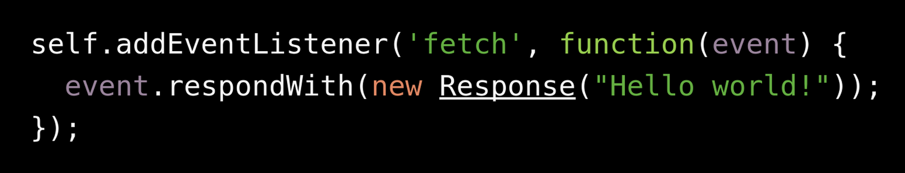
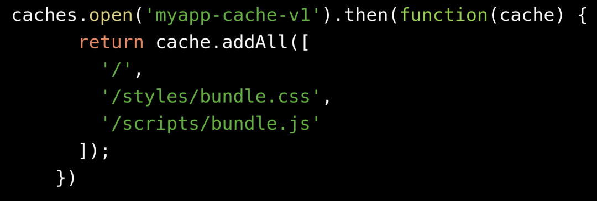
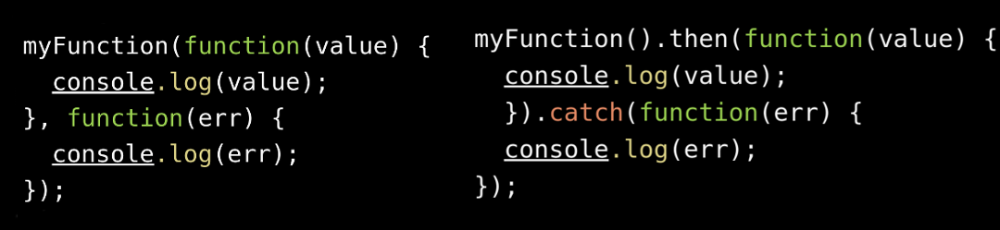
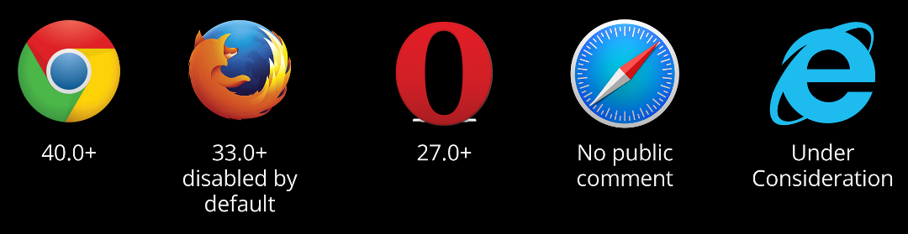
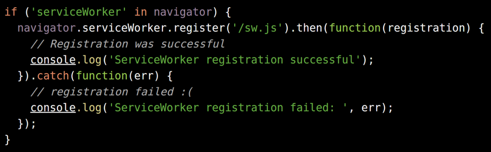
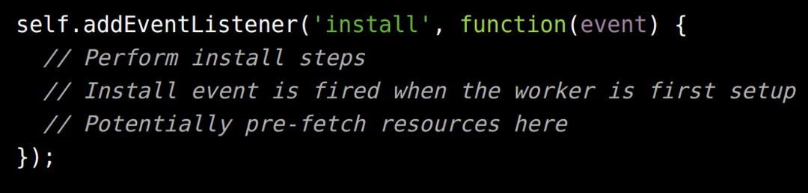
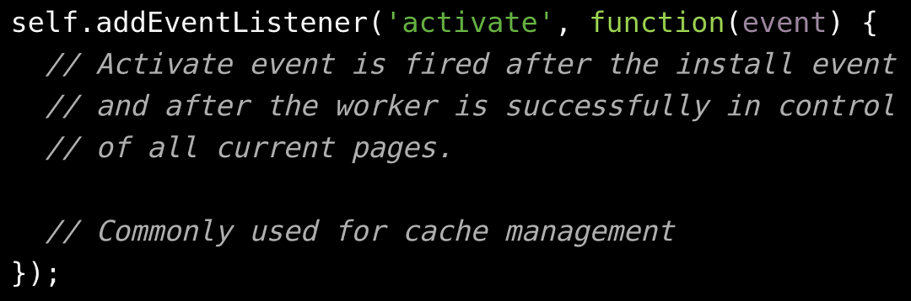

Making Offline Suck Less with Service Workers
Bret Little - https://blittle.github.io/blog - @little_bret
One of the main reasons native apps are often chosen over web apps is that the web totally sucks in providing a decent offline experience.
A Service Worker is an independent but shared execution thread for all pages on your domain.
- Cannot access the DOM
- Communicates with the pages it controls through events
- No shared data
- Requires SSL
Requires SSL
Network proxy API which can intercept all http requests to the hosted domain.

Caching API for storing responses keyed by request

Native Promises!

Is it Ready?

https://jakearchibald.github.io/isserviceworkerready/
Service Workers Life-Cycle

Register a service worker within the main app thread

Worker thread installation

Worker thread activation

Right-click page => inspect element
https://github.com/blittle/service-composer
Other related specifications:
- Push - http://w3c.github.io/push-api/
- Background sync - https://github.com/slightlyoff/BackgroundSync
- Geofencing - https://github.com/slightlyoff/Geofencing
References and Additional Information:
- https://developer.mozilla.org/en-US/docs/Web/API/ServiceWorker_API/Using_Service_Workers
- https://github.com/GoogleChrome/samples/tree/gh-pages/service-worker
- https://github.com/slightlyoff/ServiceWorker
- http://www.html5rocks.com/en/tutorials/service-worker/introduction/